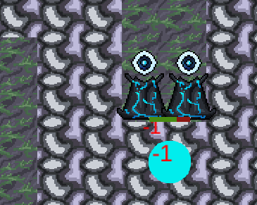
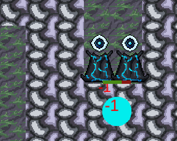

Tower Wizard
Class Group Project
This prototype game was made for a class focused on the development of casual games. This was basically a tower defense game where the player could also more actively deal with enemies by clicking on them manually.
For this game, I primarily worked on the logic surrounding the towers, along with helping with some other miscellaneous things.
This project suffered a bit from overscoping, however it did show us how we had been able to improve as a team over the semester. We were much more effective at communicating with each other, and keeping track of our own and each others' tasks. Thanks in part to the git guidelines I suggested at the start of the semester, we were all also much more confident in navigating git and dealing with issues such as merge conflicts.
You can play the game here!
Below is the postmortem writeup for the semester, which we wrote as a team. It also includes notes about our other project for the semester, Bounce.
 
